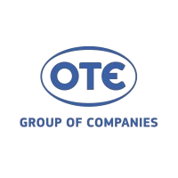

Corfu | 2024 - Present
Working as a Sales Representative at Cosmote, providing technical support and customer service, ensuring efficient resolution of telecommunications issues and maintaining high customer satisfaction.
Remote | 2024
Specialized knowledge and administration on computerization platforms, ERP management (SoftOne) with particular emphasis on immediate and effective customer service and support.
Corfu | 2012 — 2023
University of Peloponnese | Tripoli
For my thesis I created a program with RapidQ that generates a bitmap image with a barcode 3of9 that can be stored in a database. The purpose of my thesis was to help pharmacies manage and keep track of their products that manufactured in their labs.
King Street College CityofLondon
2005—2010 Competitive swimming Corfu (participated in many competitions; in both individual ones and also in medley relay, specifically as a backstroke swimmer).
Amateur billiard player.
Amateur bartender-mixologist.